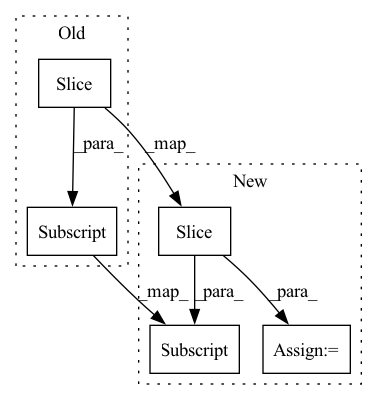

Pattern ID :15651
Before Change
y += shift_label
y /= max_label
batch_fake_images = netG(z, y)
raw_fake_images[tmp:(tmp+batch_size)] = batch_fake_images.cpu().detach().numpy()
raw_fake_counts[tmp:(tmp+batch_size)] = y.cpu().view(-1).detach().numpy()
tmp += batch_size
After Change
while tmp < NFAKE:
z = torch.randn(batch_size, GAN_Latent_Length, dtype=torch.float).to(device)
labels = np.random.choice(np.arange(num_classes),size=batch_size,replace=True)
raw_fake_labels[tmp:(tmp+batch_size)] = labels
labels = torch.from_numpy(labels).type(torch.long).to(device)
batch_fake_images = netG(z, labels)
fake_images[tmp:(tmp+batch_size)] = batch_fake_images.cpu().detach().numpy()
tmp += batch_size
//remove extra entries
fake_images = fake_images[0:NFAKE]
raw_fake_labels = raw_fake_labels[0:NFAKE]
raw_fake_labels = raw_fake_labels.astype(np.float)
//convert class labels to raw labels
raw_fake_labels = np.array([class2label[raw_fake_labels[i]] for i in range(NFAKE)])
return fake_images, raw_fake_labels
In pattern: SUPERPATTERN
Frequency: 7
Non-data size: 5
Instances Fragment ID: 52997929
Project Name: ubcdingxin/improved_ccgan
Commit Name: 8a85572c67f2b5e51be8e71eb77edbead26b2c0a
Time: 2020-03-11
Author: dingx92@gmail.com
File Name: CellCounting/Train_cDCGAN.py
M Class Name: AnonimousClass
N Class Name: AnonimousClass
M Method Name: SampcDCGAN(7)
N Method Name: SampcDCGAN(7)
M Parent Class:
N Parent Class:
M File Name: CellCounting/Train_cDCGAN.py
N File Name: CellCounting/Train_cDCGAN.py
M Start Line: 134
M End Line: 159
N Start Line: 136
N End Line: 165
Before Change
try:
cpuset_path = Path("/proc/1/cpuset")
cpuset_content = cpuset_path.read_text("utf-8")
return Path(cpuset_content).name[:CONTAINER_ID_LENGTH]
except FileNotFoundError:
return None
After Change
try:
cpuset_path = Path("/proc/1/cpuset")
cpuset_content = cpuset_path.read_text("utf-8")
path = Path(cpuset_content).name[:CONTAINER_ID_LENGTH] .strip()
return path or None
except FileNotFoundError:
return None Fragment ID: 52997962
Project Name: triton-inference-server/model_navigator
Commit Name: 899ef7e1056798e320ebe88d299a12c19f85e67d
Time: 2021-11-03
Author: jzakrzewski@nvidia.com
File Name: model_navigator/utils/docker.py
M Class Name: AnonimousClass
N Class Name: AnonimousClass
M Method Name: get_docker_container_id(0)
N Method Name: get_docker_container_id(0)
M Parent Class:
N Parent Class:
M File Name: model_navigator/utils/docker.py
N File Name: model_navigator/utils/docker.py
M Start Line: 253
M End Line: 253
N Start Line: 253
N End Line: 254
Before Change
pred = 250
trials = 1
yhat = torch.empty((trials, y.shape[0]))
yhat[:, :see] = x[:see] .unsqueeze(0)
// yhat[:, see - 1] += torch.randn(trials) * 1e-1
with torch.no_grad():
for i in range(see, see + pred):After Change
see = 250
pred = net.out_channels
yhat = torch.empty(250 + pred)
yhat[:see] = x[:see]
with torch.no_grad():
mu = net(yhat[:see].view(1, 1, -1))[0, :, -1]
yhat[see : see + pred] = mu
plt.plot(t, y, c="k")
plt.plot(t[:see], yhat[:see]) Fragment ID: 52997931
Project Name: cheind/autoregressive
Commit Name: fcaaa01384fb29f78c827ecbddea82ee3dd25036
Time: 2021-10-14
Author: cheind@profactor.at
File Name: autoregressive_damp/model.py
M Class Name: AnonimousClass
N Class Name: AnonimousClass
M Method Name: eval(0)
N Method Name: eval(0)
M Parent Class:
N Parent Class:
M File Name: autoregressive_damp/model.py
N File Name: autoregressive_damp/model.py
M Start Line: 145
M End Line: 161
N Start Line: 144
N End Line: 168
Before Change
f0_gen = f0.copy()
for s, e in get_voiced_segments(m_a):
cent = m_a[s:e] * np.sin(2 * np.pi / sr * m_f[s:e] * np.arange(0, e - s))
new_f0 = f0[s:e] * np.exp(cent * np.log(2) / 1200)
f0_gen[s:e] = new_f0
After Change
for s, e in get_voiced_segments(m_a):
// limit vibrato frequency to [3, 8] Hz
m_f_seg = np.clip(m_f[s:e] , 3, 8)
m_a_seg = m_a[s:e]
cent = m_a_seg * np.sin(2 * np.pi / sr * m_f_seg * np.arange(0, e - s)) Fragment ID: 52997964
Project Name: r9y9/nnsvs
Commit Name: e9ecf1725b8b1b8c76448cc5c5af3b3e43fd4aae
Time: 2022-03-06
Author: zryuichi@gmail.com
File Name: nnsvs/pitch.py
M Class Name: AnonimousClass
N Class Name: AnonimousClass
M Method Name: gen_sine_vibrato(4)
N Method Name: gen_sine_vibrato(4)
M Parent Class:
N Parent Class:
M File Name: nnsvs/pitch.py
N File Name: nnsvs/pitch.py
M Start Line: 315
M End Line: 315
N Start Line: 316
N End Line: 319
Before Change
list_app.remove("aggregate")
fig = plt.figure(figsize=figsize)
axs = fig.add_axes()
axs.plot(dict_pred["aggregate"][idx_start:idx_end] , label="Aggregate")
for app in list_app:
name = app.capitalize().replace("_", " ")
axs.plot(dict_pred[app]["power"][idx_start:idx_end], label=name)After Change
Plot the aggregated power load and each appliances" consumption
fig, ax = plt.subplots(figsize=figsize)
// Plot aggregate power
y = dict_pred["aggregated"][idx_start:idx_end]
x = np.arange(0, len(y)) * freq_min
ax.plot(x, y, label="Aggregate")
// List appliances
list_app = list(dict_pred.keys()) Fragment ID: 52997948
Project Name: uca-datalab/nilm-thresholding
Commit Name: a9a5a48d9e3627123745ab31e088cd82d25af43c
Time: 2021-05-06
Author: danipg1409@gmail.com
File Name: nilm_thresholding/utils/plot.py
M Class Name: AnonimousClass
N Class Name: AnonimousClass
M Method Name: plot_real_data(6)
N Method Name: plot_real_data(5)
M Parent Class:
N Parent Class:
M File Name: nilm_thresholding/utils/plot.py
N File Name: nilm_thresholding/utils/plot.py
M Start Line: 13
M End Line: 22
N Start Line: 10
N End Line: 29
Before Change
output_hidden_states=True, output_scores=True, return_dict_in_generate=True,
).sequences
// res = self.tokenizer.decode(output_id)
res = self.tokenizer.decode(output_ids[0].tolist()[input_len:] , skip_special_tokens=True)
print(f"Bot: {res}")
input_hists.append([self.args.sp2_id] + self.tokenizer.encode(res))After Change
output_hidden_states=True, output_scores=True, return_dict_in_generate=True,
).sequences
// res = self.tokenizer.decode(output_id)
output_ids = output_ids[0].tolist()[input_len:]
res = self.tokenizer.decode(output_ids, skip_special_tokens=True)
print(f"Bot: {res}")
input_hists.append([self.args.sp2_id] + self.tokenizer.encode(res)) Fragment ID: 52997934
Project Name: devjwsong/gpt2-dialogue-generation-pytorch
Commit Name: eb5f317bd588d72401e90786176c2a0b42e41b45
Time: 2021-11-29
Author: devjwsong@gmail.com
File Name: src/main.py
M Class Name: Manager
N Class Name: Manager
M Method Name: infer(1)
N Method Name: infer(1)
M Parent Class:
N Parent Class:
M File Name: src/main.py
N File Name: src/main.py
M Start Line: 252
M End Line: 252
N Start Line: 252
N End Line: 253